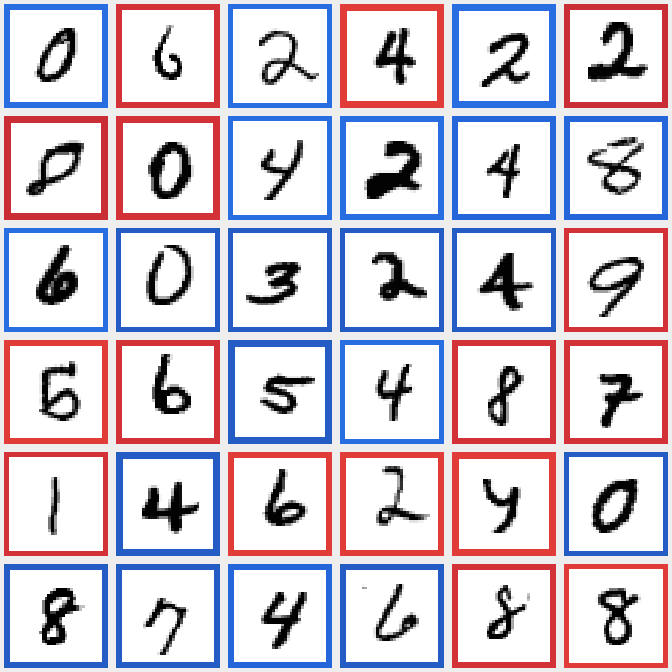

01 / THE QUESTION
이번에는 숫자를 읽고
위치를 고른다
앞선 MNIST 실험에서는 이미지의 목표 숫자에 도달하도록 −1, STOP, +1을 선택했다. 이번에는 문제를 바꿨다. 이미지에 손글씨 숫자 세 개를 놓고, 자연어 지시를 읽어 조건에 맞는 숫자의 위치를 고른다.
선택지는 LEFT, CENTER, RIGHT, NONE 네 가지다. 예를 들어 “빨간 상자에 있는 홀수를 골라”라는 지시에는 숫자의 모양, 상자 색, 홀짝 조건이 모두 필요하다. 조건에 맞는 숫자가 없을 때는 NONE을 선택한다.
같은 이미지라도 문장이 바뀌면 행동이 바뀌는지, 학습에 쓰지 않은 필체·표현·조건 조합에서도 판단이 유지되는지 살펴본다. Jev 자체를 학습한 실험이 아니라 Qwen 기반 모델에 Clef 방식의 head를 붙여 지도학습한 실험이다.

02 / ONE IMAGE, MANY QUESTIONS
같은 그림, 다른 질문
아래 고정 장면은 왼쪽부터 빨간 7, 빨간 4, 파란 3이다. 버튼을 눌러 저장된 모델의 실제 예측을 비교해 보자. 이 표시는 저장된 결과이며 버튼을 누를 때 새로 추론하지 않는다.
확률은 온도 보정 후 실제 저장 결과를 반올림한 값이다. 하나의 출력에 높은 확률을 주더라도 정답을 보장하지 않는다.
두 번째와 네 번째 지시에서는 모델이 높은 확률로 틀렸다. 오른쪽 필체를 3으로 읽지 못했을 가능성이 있지만, 내부 인식 결과를 따로 측정한 것은 아니므로 원인을 단정할 수 없다. 이 사례는 테스트를 보고 다시 학습하거나 체크포인트를 고르는 데 사용하지 않았다.
03 / MODEL
이미지와 문장에서 행동까지
모델은 이미지와 사용자가 작성한 지시문, 네 선택지의 설명을 함께 받는다. 숫자의 정답 라벨은 데이터 생성과 평가에만 사용하며 추론 입력에는 넣지 않는다.
Qwen의 표현을 Clef 방식 JointSchemaHead에 전달하면 선택지별 logit이 나온다. softmax로 확률을 구하고 가장 큰 값을 행동으로 고른다. 학습 때는 정답 행동에 대한 cross-entropy를 줄이도록 LoRA와 head를 갱신한다. Jev의 RLCD를 재현한 실험은 아니다.
이미지: [빨간 7] [빨간 4] [파란 3] 지시: 빨간 상자에 있는 홀수를 골라. 선택지: LEFT / CENTER / RIGHT / NONE 결과: LEFT (98.2%)
출력의 NONE은 조건을 만족하는 숫자가 없다는 행동이지, 모델의 일반적인 불확실성이나 답변 거부를 뜻하지 않는다. 추론 과정과 선택지 정의는 engine.py와 schema.py에서 확인할 수 있다.
04 / DATA DESIGN
정답을 알려주지 않고
판단을 가르치기
학습에는 2,265개 장면과 18,048개 지시문을 사용했다. 원본 MNIST 이미지 6,380장이 여기에 사용되었다. 한 장면에 여러 지시를 연결해, 같은 그림이라도 선택할 위치가 달라지는 경험을 포함했다. 실제로 학습 장면 중 2,197개에는 정답 행동이 서로 다른 지시들이 있다.
모호한 다중 정답과 최댓값·최솟값 동률은 제외했다. 색, 숫자 확대, 테두리, 위치의 작은 변화도 추가했다. 가능한 조건 × 언어 × 행동별로 개수를 배정했지만 조건 없는 최대·최소에는 정답이 항상 있으므로 억지로 NONE을 만들지 않았다.
원본 학습 이미지 ID를 장면 생성 전에 train·validation·calibration으로 나누고, 최종 테스트는 공식 MNIST test 이미지로 구성했다. 테스트 세트끼리는 원본 숫자 이미지가 재사용될 수 있다. “새로운 표현”과 “새로운 조합”은 이 파인튜닝에서 보지 않았다는 뜻이며 기반 모델의 사전학습 데이터까지 확인한 것은 아니다.
조합 일반화에서는 빨강 + 짝수 + 최댓값과 파랑 + 홀수 + 최솟값을 학습에서 빼고 평가했다. 각각의 속성 자체는 다른 조합에서 학습했다. 언어 일반화에서는 한국어와 영어의 문장 구조를 각각 두 개씩 제외했다.
05 / TRAINING
한 번의 학습, 검증으로 선택한 체크포인트
RTX 4070 Ti SUPER에서 batch 16으로 6,000 step을 학습했다. validation과 체크포인트 저장을 포함한 학습 시간은 69.0분이며 최초 모델 다운로드·로딩과 데이터 인코딩 시간은 포함하지 않는다. 4-bit 양자화 없이 BF16 기반 모델을 사용했고 LoRA의 rank와 alpha는 모두 16이다.
| 기반 모델 | Qwen3.5-0.8B + 새 Clef 방식 decision head |
|---|---|
| 학습 대상 | LoRA와 decision head |
| Batch / accumulation | 16 / 1 |
| 검증과 선택 | 200 step 간격, 고정 검증 256행 · step 2,000 선택 |
| 최고 GPU 메모리 | 할당 2.77 GiB · 예약 2.97 GiB |
| 확률 보정 | 별도 calibration 752행 · temperature 1.7278 |
어느 컴퓨터에서, 어떤 파라미터를 학습했나?
학습 머신은 Windows 11 Education, AMD Ryzen 7 9800X3D, RAM 약 61.6 GiB, NVIDIA RTX 4070 Ti SUPER 16 GB였다. 이번 Mac M4 Pro는 배포된 모델의 추론을 실행한 컴퓨터이며, 학습을 수행한 머신은 아니다. Unsloth 2026.10.10과 PyTorch 2.14.1 + CUDA 13.0을 사용했다.
기존 Qwen 가중치는 고정했다. 언어 모델의 attention·mixer·MLP projection에 LoRA를 추가하고, 새 decision head와 함께 학습했다. 저장된 학습 기록과 공개된 가중치 파일을 대조하면 다음과 같다.
| 구성 | 파라미터 수 | 학습 시 상태 |
|---|---|---|
| 기존 Qwen 기반 모델 | 852,985,920 | 고정 |
| 추가 LoRA | 10,822,656 | 학습 |
| 새 decision head | 27,324,932 | 학습 |
| 전체 | 891,133,508 | 학습 가능 38,147,588 · 4.28% |
4.28%는 기존 Qwen + 추가 LoRA + 새 head를 모두 포함한 모델의 파라미터 수를 분모로 한 값이다. 기존 Qwen의 가중치 4.28%를 직접 고쳤다는 뜻이 아니다. LoRA만으로는 전체의 약 1.21%이고 새 head가 약 3.07%다. 수치는 학습 기록 및 공개 safetensors를 기준으로 했다.
학습률은 LoRA 2×10⁻⁴, head 1×10⁻⁴이고 AdamW, cosine scheduler, warmup 60 step, weight decay 0.01을 사용했다. 각 장면의 정답 위치를 생성한 뒤 이미지·지시·선택지로 모델 점수를 계산하고, 정답 행동의 cross-entropy를 최소화했다. 학습 코드와 데이터 생성 코드에서 확인할 수 있다.
선택된 step 2,000에서는 고정 검증 256행 중 253행을 맞혔다. 이후 step에서도 같은 최고 정확도가 나온 구간이 있다. 별도 calibration 데이터에서 temperature를 적합한 결과 NLL은 0.1806에서 0.1279로 낮아졌다. 보정은 확률의 크기를 조정하며, 이 설정의 양의 온도는 가장 높은 행동의 순위를 바꾸지 않는다.
6,000 step × batch 16은 96,000회 샘플 노출이다. 같은 학습 행을 다시 볼 수 있으므로 이를 96,000개의 서로 다른 예제로 해석하면 안 된다.
05-B / MODEL FILES
가중치는 어디에서 받았을까?
git clone은 주로 소스 코드를 내려받는다. 실제 모델은 별도의 두 출처에서 가져와 조립한다. python download_model.py가 지정된 버전을 받고 파일별 SHA-256을 검증한다.
| 구성 | 출처와 크기 | 역할 |
|---|---|---|
| Qwen 기반 모델 | Hugging Face Qwen/Qwen3.5-0.8B ↗ 고정 revision · 관련 파일 약 1.77 GB | 사전학습된 이미지·텍스트 backbone |
| 학습된 LoRA + head | GitHub Release v0.1.0 ↗ 압축 다운로드 86.55 MB | LoRA, head, processor·설정 및 보정 정보 |
압축 파일 안의 LoRA adapter_model.safetensors는 43.35 MB, head joint_head.safetensors는 54.66 MB다. 압축 다운로드 크기와 해제된 파일 크기는 다르다. 기반 모델 revision과 파일 해시는 release_manifest.json에 고정되어 있다.
이 Mac에서는 LoRA·head 파일이 복제한 저장소의 weights/에, Qwen 기반 모델이 기본 Hugging Face 캐시 ~/.cache/huggingface/hub/에 저장됐다. 이후 같은 파일이 캐시에 있으면 다운로드 없이 재사용할 수 있다. 처음 받은 이번 실행에서도 82.5 MiB 릴리스와 약 1.77 GB 기반 모델을 실제로 내려받고 검증했으며, 연결 속도와 캐시 상태에 따라 걸리는 시간은 달라진다.
06 / EVALUATION
어디까지 맞았을까?
아래는 저장된 가중치로 수행한 최종 테스트다. 기준선은 숫자 인식 CNN과 규칙을 결합한다. 기준선도 고정 슬롯의 위치와 제한된 템플릿 어휘를 알고 있으며, 테스트 문장 의미를 파싱하도록 구성되었다. 이 비교만으로 자유로운 언어 이해나 VLM의 필요성을 증명할 수는 없다.
| 테스트 조건 | 지시 수 | VLM + head | CNN + 규칙 | 95% 신뢰구간 |
|---|---|---|---|---|
| 새 필체 | 1,504 | 99.14% | 95.21% | 98.45–99.67% |
| 새 필체 + 표현 | 1,504 | 97.87% | 97.01% | 96.50–98.95% |
| 새 필체 + 조합 | 1,024 | 98.83% | 95.70% | 97.95–99.60% |
| 새 필체 + 표현 + 조합 | 1,024 | 97.85% | 96.48% | 96.66–98.86% |
신뢰구간은 장면 단위 bootstrap이다. 장면 사이의 원본 숫자 이미지 재사용에 따른 의존성까지 완전히 반영하지는 못한다.
이미지와 문장을 둘 다 쓰고 있을까?
작은 진단 부분집합에서 원래 입력을 쓰면 100%, 이미지를 비우면 21.88%, 이미지를 섞으면 23.44%, 지시를 비우면 26.56%였다. 원래 정답을 기준으로 점수화한 입력 제거 검사이며, 입력을 제거한 결과를 새로운 정상 과제의 정확도로 해석하면 안 된다.
추론 속도는 어떻게 비교했나?
동일한 16개 입력에서 CPU와 CUDA의 행동은 모두 일치했다. 중앙값은 CPU 770.2ms와 CUDA 70.5ms였다. 전처리와 동기화를 포함하고 모델 로딩은 제외한 해당 환경의 측정이다. CPU는 float32, CUDA는 bfloat16이므로 다른 기기에서 같은 속도를 보장하지 않는다. 텍스트 생성 방식과의 속도 비교도 수행하지 않았다.
07 / LIMITS
높은 확률로 틀릴 수 있다
“파란 상자에 있는 가장 작은 홀수 … 없으면 NONE”
정답 NONE · 예측 RIGHT · 98.3%
이 데이터는 미리 정한 배치, 색상, 문장 조건을 가진 교육용 벤치마크다. 임의 배치, 낯선 필체, 여러 정답이 있는 지시나 학습 범위 밖 문장에 성능을 확장해 주장할 수 없다. Head만 학습한 ablation과 별도의 텍스트 생성 baseline도 수행하지 않았다. 따라서 head 또는 VLM이 다른 대안보다 본질적으로 더 정확하거나 빠르다고 결론 내릴 수 없다.
실제 배포 앱에서는 자유 지시의 정답을 자동으로 판정하지 않는다. 모델 확률은 신뢰도 판단의 단서일 수 있지만, 안전한 행동을 보증하는 값은 아니다. 전체 실패 사례와 평가 기록을 함께 살펴보자.
08 / TRY IT
직접 실행해 보기
브라우저에서는 공개 데모에서 CPU 추론을 실행할 수 있다. 첫 실행은 서버가 모델을 불러오는 시간 때문에 더 오래 걸릴 수 있다. ZeroGPU 환경의 선택형 GPU 경로는 사용량과 대기열 제한이 있으며 현재 별도 검증이 필요하다.
Mac에서는 저장소를 내려받고 가중치를 검증한 뒤 MPS로 실행할 수 있다. 아래는 Python 3.11이 설치된 경우의 명령이다. 처음에는 공개 기본 모델과 학습 가중치를 다운로드한다.
git clone https://github.com/gisbi-kim/mnist-visual-decision-lab.git cd mnist-visual-decision-lab python3.11 -m venv .venv source .venv/bin/activate pip install torch==2.14.1 torchvision==0.29.1 pip install -r requirements.txt python download_model.py python app.py --device mps
서버가 준비되면 http://127.0.0.1:7860에서 열린다. 이 MacBook Pro M4 Pro에서는 MPS로 고정 예시 한 건을 직접 추론했다. 이는 모든 Mac 환경이나 전체 테스트에 대한 검증을 뜻하지 않는다.
09 / SOURCE MATERIAL
코드와 실험 자료
- 실험 저장소 ↗데이터 생성, 학습, 추론 및 재현 방법
- 평가와 실패 사례 ↗표본 수, 신뢰구간, 확률과 하드웨어 비교
- 공개 가중치 ↗체크섬 검증이 포함된 릴리스
- 이전 MNIST 튜토리얼 ↗−1 / STOP / +1 이동 문제와 학습 과정
- Clef decision models ↗결정 모델과 선택지 기반 출력의 배경